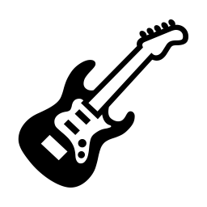
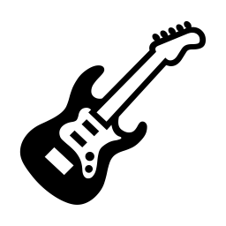

Proyectos Especiales:
Información sobre proyectos y programas especiales del colegio.
Club de Ajedrez
Clases de Guitarra
Club de Futbol

Grupo de Ballet
guapuru.alan@gmail.com
|
☎60975799
Inspirados en la nueva visión de la enseñanza, basada en el cerebro "LA NEUROEDUCACIÓN"
Es un placer darles la bienvenida al Colegio Privado Junín, una institución educativa comprometida con la excelencia académica y el desarrollo integral de nuestros estudiantes. En nuestro colegio, creemos firmemente que la educación es la clave para el futuro y trabajamos incansablemente para ofrecer una experiencia educativa que no solo cumpla con los estándares académicos más altos, sino que también fomente valores esenciales como el respeto, la responsabilidad y la solidaridad.
Nos sentimos honrados de contar con su confianza y esperamos poder acompañar a sus hijos en este emocionante viaje de aprendizaje y crecimiento. Les invitamos a explorar nuestra página web para obtener más información sobre nuestra oferta educativa, nuestras instalaciones y los diversos servicios que ofrecemos. Si tienen alguna pregunta o necesitan más información, no duden en ponerse en contacto con nosotros. Estamos aquí para ayudarles y esperamos poder darles la bienvenida en persona muy pronto.
Desde su fundación en 1965, el Colegio Privado Junín ha sido un pilar fundamental en la educación de la comunidad de [Nombre de la Ciudad]. Iniciamos nuestra trayectoria con el firme propósito de ofrecer una educación integral de calidad, enfocada en el desarrollo académico, personal y social de nuestros estudiantes. El Colegio Privado Junín fue establecido por un grupo de educadores visionarios que entendieron la importancia de una formación que no solo promueva el conocimiento académico, sino también los valores éticos y el compromiso cívico. Comenzamos modestamente, pero con el tiempo hemos crecido y evolucionado, adaptándonos a los cambios y desafíos de la educación contemporánea. A lo largo de más de medio siglo, hemos construido una reputación sólida basada en la excelencia académica, el compromiso con la innovación educativa y la dedicación a nuestros estudiantes. Nuestros egresados han destacado en diversas áreas del conocimiento.
Información sobre el proceso de admisión.
Misión
Nuestra misión es proporcionar una educación de excelencia que prepare a nuestros estudiantes para ser ciudadanos globales responsables, críticos y creativos. Nos comprometemos a fomentar un entorno de aprendizaje inclusivo y seguro, donde cada estudiante pueda desarrollar su máximo potencial académico, personal y social. A través de una enseñanza innovadora y personalizada, buscamos inculcar valores como la integridad, el respeto, la empatía y la responsabilidad, asegurando que nuestros alumnos estén equipados con las habilidades y conocimientos necesarios para enfrentar los desafíos del mundo moderno.
Visión
Nuestra visión es ser una institución educativa líder, reconocida por nuestra calidad académica, innovación pedagógica y compromiso con la formación integral de nuestros estudiantes. Aspiramos a ser un referente en la educación privada, destacándonos por nuestra capacidad de adaptarnos a los cambios y necesidades de la sociedad, promoviendo una cultura de aprendizaje continuo y desarrollo sostenible. Queremos formar líderes éticos y competentes que contribuyan positivamente a sus comunidades y al mundo, promoviendo el bienestar y el progreso social a través de la educación.
Información sobre proyectos y programas especiales del colegio.
Club de Ajedrez
Clases de Guitarra
Club de Futbol
Grupo de Ballet